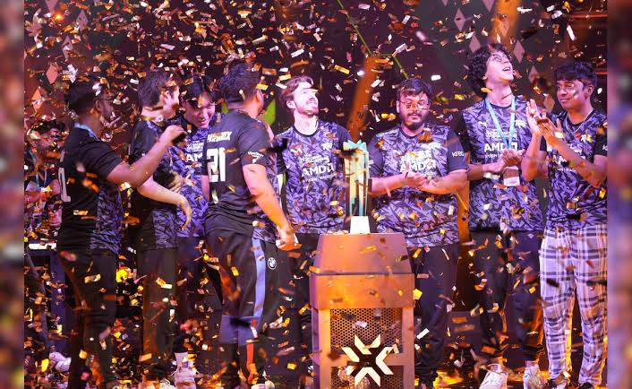

Esports in India: Latest Situation
Esports, or competitive video gaming, has been rapidly gaining popularity in India over the past few years. With a growing number of players, tournaments, and sponsorships, the esports industry is emerging as a significant segment of the entertainment and sports landscape in the country.
The Indian government has recognized esports as a legitimate sport, which has led to increased support and investment in the sector. Major tournaments are being organized across various games, attracting both amateur and professional players. Additionally, streaming platforms and social media have played a crucial role in promoting esports content and engaging with fans.
As the esports ecosystem continues to evolve, it presents opportunities for players, teams, sponsors, and investors. The future of esports in India looks promising, with potential for further growth and international recognition.
Esports in India
Esports has grown rapidly in India over the past few years, evolving from a niche hobby into a professional competitive industry. With better internet connectivity, affordable smartphones, and increasing investments from gaming organizations, thousands of players now compete in national and international tournaments. Esports is officially recognized by the Government of India as part of the multi-sports category, further encouraging the growth of professional gaming. Today, India hosts major tournaments, attracts millions of online viewers, and offers career opportunities for players, coaches, analysts, streamers, and content creators. Industry experts believe the country is steadily becoming a multi-game esports market with strong long-term growth potential.
Popular Esports Games and Famous Indian Players
Some of the most popular esports titles in India include Battlegrounds Mobile India (BGMI), VALORANT, Counter-Strike 2, Pokémon UNITE, and EA Sports FC. Among these, BGMI remains the country's biggest mobile esport, while VALORANT continues to gain popularity on PC. Well-known Indian esports athletes include Jonathan Amaral (Jonathan Gaming), Naman Mathur (Mortal), Tanmay Singh (ScoutOP), Vivek "ClutchGod" Horo, and Mohammad "Manya" Raja, who have represented India in major tournaments and inspired a new generation of gamers. Organizations such as GodLike Esports, Team Soul, Revenant XSpark, and Global Esports have also played an important role in India's competitive gaming scene.
Mobile Legends Esports in India
Mobile Legends: Bang Bang (MLBB) is witnessing rapid growth in India following its official launch in the country. Tournament organizers and esports organizations are expected to host more regional competitions, qualifiers, and professional leagues to develop Indian talent. Global publisher MOONTON Games has also shown interest in expanding the Indian competitive ecosystem, giving players opportunities to qualify for international championships. With Mobile Legends currently ranking among the world's most-watched esports titles, Indian fans are optimistic that local teams will soon compete regularly on the global stage. Alongside BGMI and VALORANT, Mobile Legends is expected to become one of the major esports titles driving the next phase of India's gaming industry.
To view more about Esports in India, click here to read the latest news and updates from LiveMint.